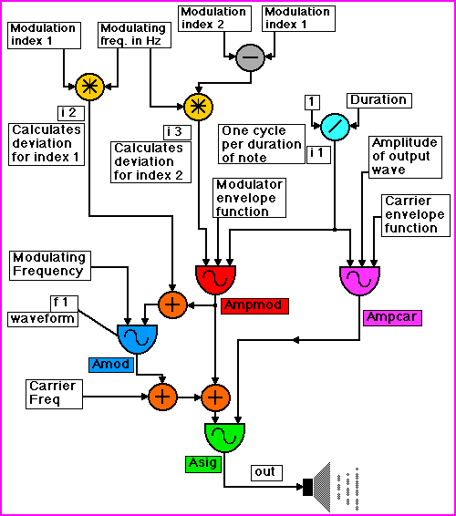

The piece employs only a single instrument, the Single Carrier FM instrument designed by John Chowning1. This instrument has a great deal of power and a variety of timbral qualities that can be easily manipulated by varying a few parameters.
1. Chowning, John. The Synthesis of Complex Audio Spectra by Means of Frequency Modulation. Published in Journal of the Audio Engineering Society, 21 (7), 1973.
Flow Chart A: Single Carrier FM.

Original file name: a2Reteplas - converted on Tuesday, 24 June 1997, 21:00